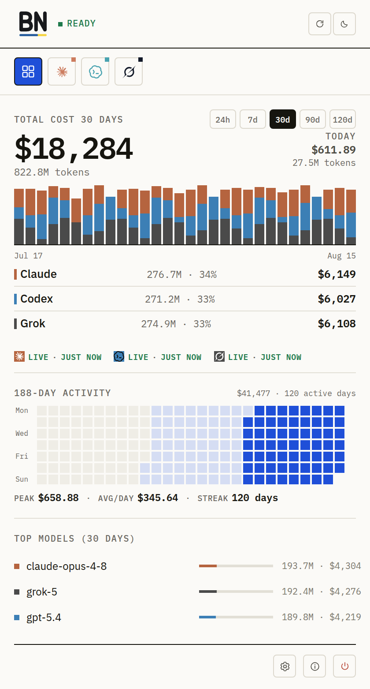
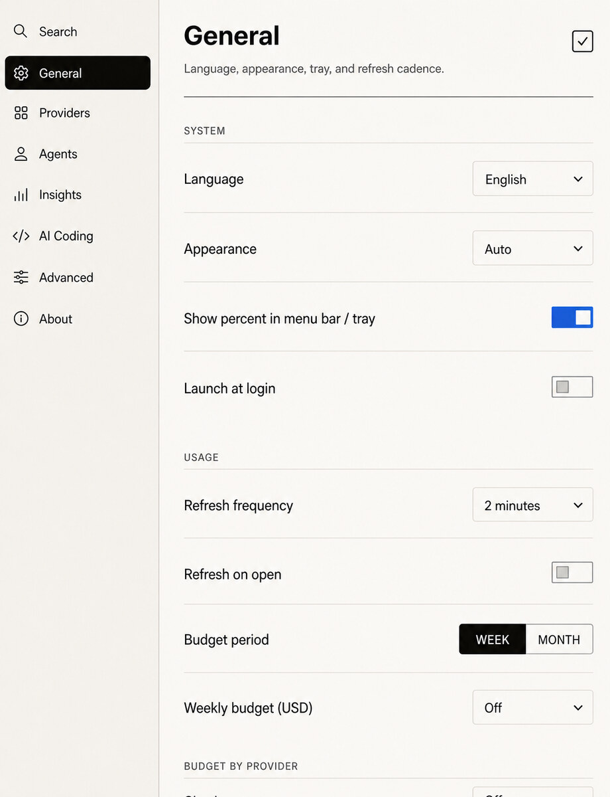

Tu pequeño compañero de escritorio para las cuotas
Sigue programando.
BirdNion vigila los límites por ti.
Claude, Codex, Gemini y otras herramientas muestran el uso en sitios distintos. BirdNion te pone a un clic cuánto te queda y cuándo se restablece, usando solo las conexiones con proveedores que elijas.
Claude · Codex · Gemini · Cursor · Grok · ver cobertura exacta
macOS 14+ · Homebrew
brew install --cask hapo-nghialuu/tap/birdnion
Firmada con Developer ID y notarizada por Apple. En Linux x86_64, descarga .deb, .rpm o AppImage


DURANTE UNA SESIÓN DE TRABAJO REAL
Un vistazo en vez de cinco paneles.
Antes de una tarea larga o de cambiar de herramienta, abre BirdNion. Responde a tres preguntas con los datos que realmente ofrece cada fuente activada y te avisa si una conexión necesita atención, en lugar de inventarse una cifra.
-
01
¿Cuánto me queda?
Cada tarjeta muestra los periodos de cuota que ofrece su proveedor: de 5 horas, semanales, mensuales, de créditos o de presupuesto. Si el proveedor no informa sobre un periodo, este se mantiene marcado como no disponible.
02 / Tarjeta de cuotaEjemplo renderizadoClaudeBANDEJACUOTA MÍNIMA · SEMANA38%5 HORAS71%29% USADOSE RESTABLECE EN 3HSEMANA38%62% USADOSE RESTABLECE EN 2DOPUS84%16% USADOSE RESTABLECE EN 2DRecreado a partir de los estilos actuales de la interfaz de BirdNion para Linux · datos de ejemplo · no es una captura nativa -
02
¿Cuándo puedo volver a usarlo?
Las cuentas atrás te ayudan a decidir si esperar, cambiar de herramienta o seguir. Quota Agenda ordena los próximos restablecimientos de los distintos proveedores usando solo las horas que estos indican.
03 / Quota AgendaEjemplo renderizadoQuota Agenda3 proveedores con datosSOLO HORAS DE RESTABLECIMIENTO EXPLÍCITASRecreado a partir de los estilos actuales de la interfaz de BirdNion para Linux · datos de ejemplo · no es una captura nativa -
03
¿Necesita atención esta fuente?
Cuando caduca una sesión o una clave deja de funcionar, la tarjeta te avisa. Ve directamente al ajuste del proveedor, corrige la fuente y vuelve a ejecutar la comprobación real.
04 / Necesita atenciónEjemplo renderizadoCodexBANDEJACookie caducada — vuelve a iniciar sesión en el navegadorRecreado a partir de los estilos actuales de la interfaz de BirdNion para Linux · datos de ejemplo · no es una captura nativa
También en macOS y Linux: costes locales diarios de 17 fuentes de agentes, a partir de los registros de sesión de Claude, Codex, Grok, Kiro, Oh My Pi, Pi, Devin, OpenCode, Gemini CLI, Copilot CLI, Antigravity, Cursor, Amp, Droid, Kimi, Qwen Code y Goose.
PRUEBA PRIMERO UNA HERRAMIENTA
Conecta un proveedor.
Consulta una tarjeta de restablecimiento real.
- 01Instala BirdNion
Usa Homebrew en macOS o un paquete publicado en Linux.
- 02Elige un proveedor
Claude, Codex y Grok cuentan con una guía para la primera conexión en directo.
- 03Confirma la conexión
BirdNion guarda tu elección y comprueba la fuente real antes de marcarla como conectada en directo.
- 04Consulta cuánto te queda
Una tarjeta con cuotas y restablecimientos reales, no datos de demostración, confirma que la conexión funciona.
macOS 14+ con Homebrew
brew install --cask hapo-nghialuu/tap/birdnion
Firma actual para macOS: la aplicación está firmada con Developer ID y notarizada por Apple, por lo que Gatekeeper la abre directamente.
Linux x86_64 · licencia MIT · sin registro en BirdNion
Descargar para macOS o LinuxNO INTERRUMPE TU TRABAJO
Echa un vistazo sin salir del editor.
En macOS, BirdNion vive en la barra de menús; activa los porcentajes para ver cuánto te queda junto a su icono. En Linux, el propio icono de la bandeja muestra el porcentaje y el logotipo del proveedor de forma predeterminada. Ambos alternan entre tus proveedores, empezando por los que tienen cuota en uso.
- macOS 14+Aplicación universal · barra de menús
- Linux x86_64DEB · RPM · AppImage
Limitaciones actuales
- macOSFirmada con Developer ID y notarizada
- LinuxSolo paquetes x86_64
- LinuxSin atajo global ni información emergente al pasar el cursor sobre el panel

QUÉ CONSULTA
Sin servidor de BirdNion
ni cuenta.
BirdNion consulta las fuentes documentadas de los proveedores que actives y los registros de sesión locales de los agentes de programación que encuentra en rutas de instalación fijas, para obtener el historial de costes. No analiza todo el disco. Puedes cambiar la fuente de cada proveedor en Ajustes; las fuentes activadas siguen comunicándose con su propio proveedor.
- Contraseñas
- BirdNion nunca las guarda.
- Sesiones existentes
- Se reutilizan cuando es posible. Las sesiones de OAuth, Keychain y CLI permanecen en las herramientas a las que pertenecen.
- Claves que introduces
- Se guardan en texto sin formato en los archivos locales de BirdNion, accesibles solo desde tu cuenta de usuario.
- Cookies del navegador
- En modo Automático, el predeterminado, los proveedores compatibles con cookies solo leen las de su propio sitio en tu navegador. Puedes cambiar a Manual o Desactivado para cada proveedor.
- Análisis de proyectos
- Se guardan un nombre de carpeta y un ID obtenido mediante hash, nunca la ruta completa.
Preguntas antes de darle la bienvenida a este pájaro
¿Analizará BirdNion todo mi ordenador?
No. Comprueba una lista fija de rutas de instalación para encontrar agentes de programación, lee sus registros de sesión locales para obtener el historial de costes y consulta las fuentes documentadas de los proveedores que actives. No realiza un análisis recursivo del sistema de archivos.
¿Tengo que volver a iniciar sesión?
Depende del proveedor. BirdNion puede reutilizar las sesiones de CLI, OAuth o navegador compatibles; otras fuentes requieren una clave o configuración explícita.
¿Ofrecen todos los proveedores los mismos datos?
No. Cada tarjeta refleja solo lo que realmente ofrece ese proveedor o fuente local, incluidos los estados de no disponibilidad.
¿En qué se diferencia Linux de macOS?
El icono de la bandeja de Linux muestra el porcentaje de forma predeterminada, mientras que en macOS debes activar los porcentajes de la barra de menús. Linux no tiene atajo global ni información emergente al pasar el cursor sobre el panel, solo ofrece paquetes x86_64 y no muestra el uso de revisión de código de Codex.
¿Cuesta algo BirdNion?
No. BirdNion tiene licencia MIT y no requiere una cuenta de BirdNion. Siguen aplicándose los planes y las tarifas de API de tus proveedores.
¿Mostrará macOS un aviso al abrirla por primera vez?
Solo la confirmación habitual de «descargada de Internet» al abrirla por primera vez. La aplicación está firmada con Developer ID y notarizada por Apple, por lo que Gatekeeper la acepta.